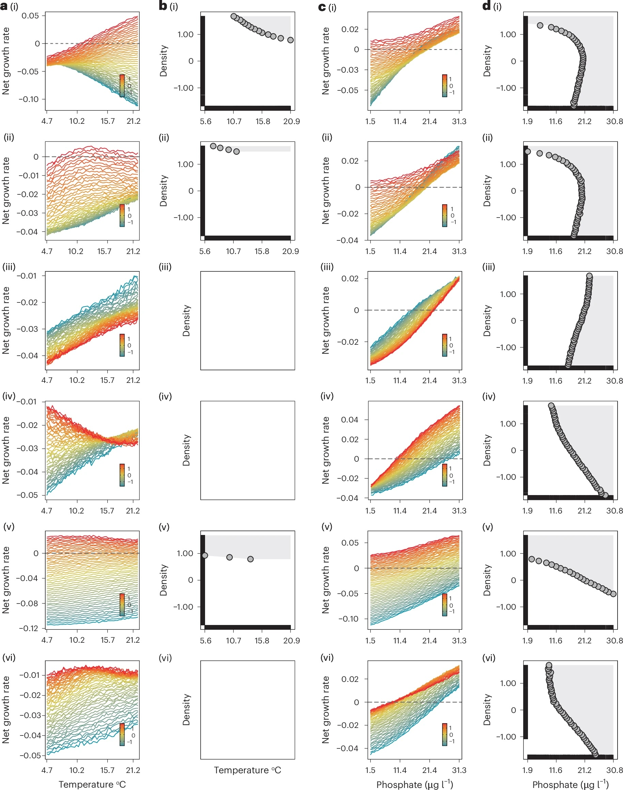

Eco-evolutionary dynamics
Plankton evolve on the same timescale as their populations change. I separate the ecological and trait-driven (evolutionary) contributions to population change, and ask how often these feedbacks matter in nature.
PhD candidate in Ecology, ETH Zurich
I study how species interactions and eco-evolutionary dynamics shape the structure, function and stability of complex communities, using plankton as a fast-living window into how ecosystems work.
I am a quantitative community ecologist. I want to understand what makes complex ecosystems tick: how networks of interacting species, and the rapid evolution happening inside them, drive community dynamics and decide whether those communities stay stable.
In my PhD at ETH Zurich and Eawag, supervised by Dr. Francesco Pomati, I combined five years of daily, high-frequency plankton monitoring from Lake Greifensee with empirical dynamic modelling (EDM). I showed that biotic interactions reshape the realised niche of toxic cyanobacteria, and that eco-evolutionary interactions are common in a natural plankton community and influence its dynamics.
Next, I want to build a framework that brings eco-evolutionary interactions into how we study community dynamics and stability more broadly.
I started with how species interact and evolve in real communities. Where I'm heading is the bigger question: what keeps complex ecosystems stable?
Plankton evolve on the same timescale as their populations change. I separate the ecological and trait-driven (evolutionary) contributions to population change, and ask how often these feedbacks matter in nature.
Using nonlinear time-series methods (simplex, S-maps, convergent cross mapping), I reconstruct time-varying species interactions directly from observational data, revealing who affects whom, and when.
How do interaction networks and rapid evolution together shape the resistance and recovery of communities, and why do some systems tip into new states, such as harmful cyanobacterial blooms?
Study systems. Most of my work uses daily plankton densities, traits and limnology from Lake Greifensee, recorded by an underwater camera and automated monitoring. I am not tied to one lake, though: any community of fast-growing organisms where ecology and evolution play out together is a good system for these questions.
Using five years of daily lake data and state-space reconstruction, we found that interactions with co-occurring plankton reshape the realised niche of the bloom-forming cyanobacteria Microcystaceae and Dolichospermum. Those shifts are large enough to decide whether conditions allow a bloom or prevent it.

images/figure-niche.pngThese organisms were photographed in situ by the underwater microscope in Lake Greifensee. Their daily densities and traits are the data behind my work.


Images: Aquascope, Eawag.
Outside of time series and plankton, a few other interactions shape my dynamics.
I am part of the Plankton Ecology group at Eawag and work within the CyanoBloom project.